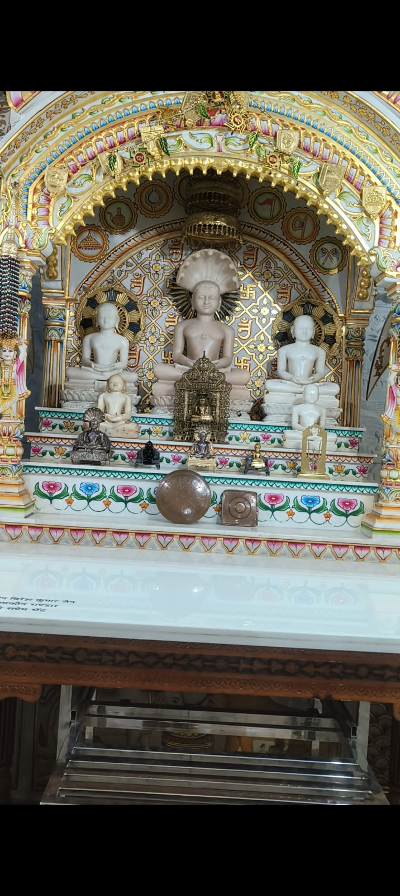
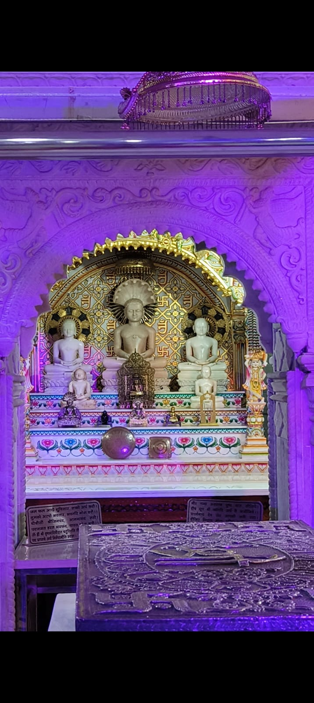
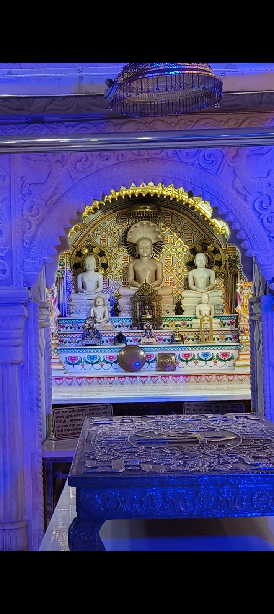

Religious Events
Jain parvas, puja, bhakti and spiritual programmes.
JIN SHASAN PRABHAVNA SANGH • KARNAL
Discover. Connect. Learn. Experience. Participate. Serve.
A community space for Jain darshan, yatras, knowledge, bhakti, events and seva — created to bring young Jains together.

WHO WE ARE
Jain Youth Karnal is the public-facing youth identity of Jin Shasan Prabhavna Sangh Karnal. The initiative brings together young Jains through spirituality, Jain knowledge, cultural connection, and community service.
The website is designed to become a living archive and a community gateway — not simply an information page.
JAIN YATRA

MONTHLY JAIN YATRA
Follow Jain Youth Karnal for the destination announcement, registration details, countdown, live journey updates and the post-yatra gallery.
Follow the latest updates →COMMUNITY CALENDAR
Jain parvas, puja, bhakti and spiritual programmes.
Activities that bring Jain youth together through participation and connection.
Community programmes, cultural activities and future seva initiatives.
JAIN KNOWLEDGE
Profiles, teachings and important milestones.
Explore the five Kalyanaks and their significance.
Atishay Kshetras, Siddha Kshetras, Jinalayas and pilgrimage destinations.
Jaap, Bhaktamar, puja, parvas and other Jain practices.
JIN DARSHAN DIARIES


BECOME A PART
Whether you want to join a yatra, volunteer at an event, contribute content, participate in seva or learn more about Jain dharma, there's a way for you to be involved.